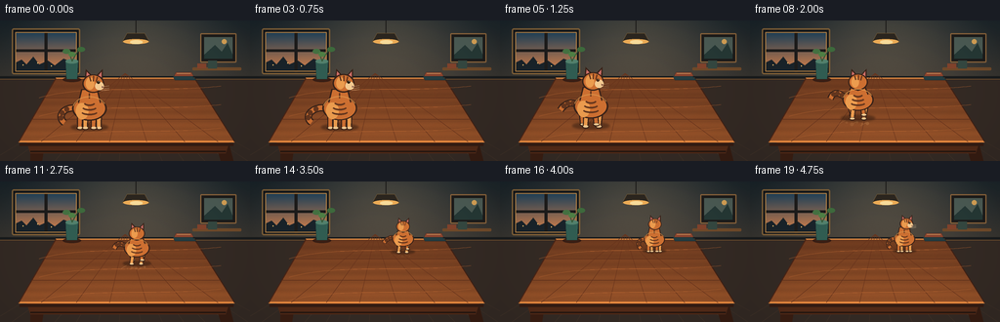
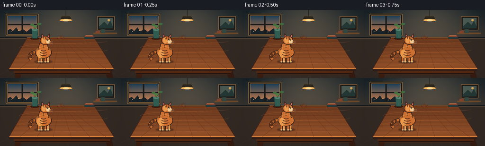

CODING AGENTS AS PIXEL WORLD MODELS
traex/GPT-5.6-Sol · dynamic_spatial_relationship_0013
点击播放 · 原生 RGB 像素
逐轮保存的候选
回放视频、检查图与代码变化。
每份候选均可单独播放。实际图片检查记录在下方工具轨迹中。
候选 01播放与检查图
点击播放 · 原生 RGB 像素


展开代码变化
--- 上一保存版本
+++ 本次保存版本
@@ -0,0 +1,359 @@
+from pathlib import Path
+import math
+
+import numpy as np
+from PIL import Image, ImageDraw, ImageFilter
+
+import artifact_io
+
+
+W, H, N = 256, 144, 20
+SS = 4
+CW, CH = W * SS, H * SS
+
+
+def q(v):
+ return int(round(v * SS))
+
+
+def pts(seq):
+ return [(q(x), q(y)) for x, y in seq]
+
+
+def box(x0, y0, x1, y1):
+ return (q(x0), q(y0), q(x1), q(y1))
+
+
+def smoothstep(x):
+ x = max(0.0, min(1.0, x))
+ return x * x * (3.0 - 2.0 * x)
+
+
+def cubic(p0, p1, p2, p3, steps=30):
+ out = []
+ for i in range(steps):
+ t = i / (steps - 1)
+ u = 1.0 - t
+ out.append((
+ u**3 * p0[0] + 3*u*u*t*p1[0] + 3*u*t*t*p2[0] + t**3*p3[0],
+ u**3 * p0[1] + 3*u*u*t*p1[1] + 3*u*t*t*p2[1] + t**3*p3[1],
+ ))
+ return out
+
+
+def make_background():
+ """A static, softly lit room and a very explicit perspective table."""
+ yy, xx = np.mgrid[0:CH, 0:CW]
+ yn = yy / SS
+ xn = xx / SS
+
+ # Plaster wall: warm lamp pool, subtle grain, and edge falloff.
+ top = np.array([37, 48, 55], dtype=float)
+ bottom = np.array([87, 73, 59], dtype=float)
+ mix = np.clip(yn / 110.0, 0, 1)[..., None]
+ arr = top * (1 - mix) + bottom * mix
+ glow = np.exp(-(((xn - 140) / 78) ** 2 + ((yn - 10) / 60) ** 2))
+ arr += glow[..., None] * np.array([34, 24, 12])
+ vignette = np.clip(((xn - 128) / 154) ** 2 + ((yn - 72) / 108) ** 2, 0, 1)
+ arr -= vignette[..., None] * 13
+ rng = np.random.default_rng(1307)
+ arr += rng.normal(0, 0.9, (CH, CW, 1))
+ arr = np.clip(arr, 0, 255).astype(np.uint8)
+ im = Image.fromarray(arr, "RGB")
+ d = ImageDraw.Draw(im)
+
+ # Floor / rear wall junction.
+ d.rectangle(box(0, 58, 256, 144), fill=(53, 43, 37))
+ d.rectangle(box(0, 57, 256, 60), fill=(27, 29, 30))
+ d.line(pts([(0, 60), (256, 60)]), fill=(119, 83, 48), width=q(0.8))
+ for x in range(-10, 280, 22):
+ d.line(pts([(128, 60), (x, 144)]), fill=(65, 50, 40), width=q(0.45))
+
+ # Window at left, dusk sky and frame.
+ d.rounded_rectangle(box(12, 8, 82, 55), radius=q(2), fill=(20, 24, 28), outline=(130, 98, 57), width=q(1.4))
+ for iy in range(q(12), q(51)):
+ f = (iy / SS - 12) / 39
+ col = tuple(int(a*(1-f)+b*f) for a, b in zip((32, 67, 92), (218, 132, 77)))
+ d.line([(q(16), iy), (q(78), iy)], fill=col, width=1)
+ # skyline and distant lights
+ d.polygon(pts([(16, 43), (22, 40), (27, 45), (34, 37), (40, 45), (49, 41), (56, 46), (65, 39), (78, 44), (78, 51), (16, 51)]), fill=(26, 36, 43))
+ for x, y in [(23,45),(38,43),(52,46),(69,44)]:
+ d.ellipse(box(x, y, x+1.1, y+1.1), fill=(255, 207, 116))
+ d.rectangle(box(45.5, 10, 48.5, 53), fill=(30, 29, 28))
+ d.rectangle(box(14, 29.5, 80, 32), fill=(30, 29, 28))
+ d.line(pts([(16, 12), (78, 12), (78, 52), (16, 52), (16, 12)]), fill=(178, 129, 70), width=q(1))
+
+ # Framed cat-sized landscape print and shelf on right wall.
+ d.rounded_rectangle(box(205, 13, 242, 43), radius=q(1.2), fill=(29, 28, 27), outline=(142, 103, 62), width=q(1.3))
+ d.rectangle(box(209, 17, 238, 39), fill=(77, 93, 86))
+ d.polygon(pts([(209, 35), (220, 25), (227, 32), (233, 23), (238, 35), (238, 39), (209, 39)]), fill=(39, 58, 55))
+ d.ellipse(box(227, 19, 232, 24), fill=(220, 166, 88))
+ d.rounded_rectangle(box(197, 48, 247, 51), radius=q(1), fill=(114, 76, 43))
+ d.rectangle(box(202, 44, 211, 49), fill=(132, 69, 45))
+ d.rectangle(box(213, 41, 222, 49), fill=(54, 74, 66))
+
+ # Pendant and its glow cue.
+ d.line(pts([(139, 0), (139, 13)]), fill=(30, 29, 27), width=q(1.1))
+ d.polygon(pts([(130, 13), (148, 13), (153, 22), (125, 22)]), fill=(45, 39, 31), outline=(164, 119, 61))
+ d.ellipse(box(126, 19, 152, 24), fill=(242, 176, 88))
+ d.ellipse(box(133, 20, 146, 24), fill=(255, 225, 158))
+
+ # Table legs/apron sit behind the top.
+ d.polygon(pts([(31, 118), (47, 118), (43, 144), (31, 144)]), fill=(59, 31, 19))
+ d.polygon(pts([(218, 117), (232, 117), (239, 144), (226, 144)]), fill=(55, 29, 18))
+ d.polygon(pts([(25, 118), (237, 118), (231, 136), (31, 136)]), fill=(84, 43, 24))
+ d.line(pts([(31, 134), (231, 134)]), fill=(38, 23, 17), width=q(1.5))
+
+ # Table top is a textured trapezoid, making "back" unambiguous.
+ mask = Image.new("L", (CW, CH), 0)
+ md = ImageDraw.Draw(mask)
+ table_poly = [(19, 124), (240, 124), (199, 59), (57, 59)]
+ md.polygon(pts(table_poly), fill=255)
+
+ wood = np.zeros((CH, CW, 3), dtype=np.uint8)
+ rng = np.random.default_rng(551)
+ base_noise = rng.normal(0, 2.0, (CH, CW))
+ for y in range(CH):
+ yb = y / SS
+ g = np.clip((yb - 58) / 68, 0, 1)
+ col = np.array([106, 57, 31]) * (1-g) + np.array([153, 84, 42]) * g
+ grain = 4.5 * math.sin(yb * 0.72) + base_noise[y]
+ wood[y] = np.clip(col + grain[:, None] * np.array([1.0, .55, .25]), 0, 255)
+ wood_im = Image.fromarray(wood, "RGB")
+ im.paste(wood_im, (0, 0), mask)
+ d = ImageDraw.Draw(im)
+
+ # Edge, seams, converging grain and a warm lamp reflection.
+ d.line(pts([(57, 59), (199, 59)]), fill=(220, 137, 67), width=q(1.35))
+ d.line(pts([(19, 124), (240, 124)]), fill=(246, 147, 67), width=q(1.7))
+ d.line(pts([(20, 127), (239, 127)]), fill=(53, 29, 20), width=q(3.0))
+ d.line(pts([(57, 59), (19, 124)]), fill=(75, 37, 23), width=q(1.1))
+ d.line(pts([(199, 59), (240, 124)]), fill=(65, 34, 22), width=q(1.1))
+ for target in [42, 78, 112, 150, 189, 223]:
+ d.line(pts([(128, 54), (target, 124)]), fill=(105, 53, 29), width=q(.42))
+ for y in [79, 101]:
+ frac = (y - 59) / 65
+ xl = 57 + (19-57)*frac
+ xr = 199 + (240-199)*frac
+ d.line(pts([(xl, y), (xr, y)]), fill=(89, 45, 27), width=q(.55))
+ # freehand grain highlights
+ for y, off, alpha in [(69, 4, 0), (88, -9, 0), (112, 11, 0)]:
+ curve = cubic((40, y+10), (85, y-4), (167, y+5), (226, y-2), 45)
+ d.line(pts(curve), fill=(181, 100, 49), width=q(.45))
+
+ # Small, depth-setting objects near the rear corners, leaving center clear.
+ d.ellipse(box(64, 58, 83, 63), fill=(58, 31, 21))
+ d.polygon(pts([(67, 42), (80, 42), (79, 60), (68, 60)]), fill=(49, 94, 83), outline=(25, 49, 46))
+ d.ellipse(box(67, 39.5, 80, 44), fill=(84, 131, 111))
+ # plant stems/leaves
+ d.line(pts([(74, 42), (70, 31)]), fill=(55, 91, 56), width=q(1))
+ d.line(pts([(74, 41), (81, 29)]), fill=(55, 91, 56), width=q(1))
+ d.ellipse(box(64, 29, 72, 34), fill=(70, 116, 68))
+ d.ellipse(box(79, 27, 87, 32), fill=(63, 108, 62))
+ d.ellipse(box(70, 32, 77, 37), fill=(81, 130, 70))
+
+ # Three books stacked at rear right visually mark the table's back edge.
+ d.polygon(pts([(177, 57), (197, 57), (201, 61), (179, 61)]), fill=(36, 61, 66), outline=(25, 35, 37))
+ d.polygon(pts([(180, 53), (196, 53), (198, 57), (178, 57)]), fill=(143, 71, 48), outline=(60, 35, 28))
+ d.line(pts([(181, 54), (195, 54)]), fill=(221, 174, 111), width=q(.5))
+
+ return im
+
+
+def draw_speed_cues(frame, x, y, scale, amount, phase):
+ if amount <= 0:
+ return
+ layer = Image.new("RGBA", (CW, CH), (0, 0, 0, 0))
+ d = ImageDraw.Draw(layer)
+ # Short scratches and dust puffs remain on the tabletop, never in the air.
+ for k in range(3):
+ ox = (-15 + k*12 + 2*math.sin(phase+k)) * scale
+ yy = y + (1+k*.9)*scale
+ d.line(pts([(x+ox, yy), (x+ox-7*scale, yy+4*scale)]),
+ fill=(250, 195, 120, int(75*amount)), width=max(1, q(.55*scale)))
+ for k in range(5):
+ a = phase * 1.7 + k*1.87
+ px = x + (-12 + k*5.5)*scale
+ py = y + (2 + abs(math.sin(a))*3)*scale
+ r = (1.3 + .5*math.sin(a))*scale
+ d.ellipse(box(px-r, py-r, px+r, py+r), fill=(226, 169, 103, int((38+8*k)*amount)))
+ frame.alpha_composite(layer)
+
+
+def draw_cat(frame, x, y, s, pose, turn, running):
+ """Draw a warm orange tabby from a readable rear three-quarter view."""
+ layer = Image.new("RGBA", (CW, CH), (0, 0, 0, 0))
+ d = ImageDraw.Draw(layer)
+ outline = (58, 35, 25, 255)
+ dark = (100, 54, 30, 255)
+ fur = (206, 112, 50, 255)
+ light = (237, 157, 79, 255)
+ cream = (244, 202, 145, 255)
+ pink = (206, 112, 105, 255)
+
+ # Contact shadow scales and tightens with depth.
+ sh = Image.new("RGBA", (CW, CH), (0, 0, 0, 0))
+ sd = ImageDraw.Draw(sh)
+ sd.ellipse(box(x-18*s, y-5.1*s, x+18*s, y+1.8*s), fill=(26, 16, 12, 105))
+ sh = sh.filter(ImageFilter.GaussianBlur(q(max(.45, 1.0*s))))
+ layer.alpha_composite(sh)
+
+ bounce = (1.8 * abs(math.sin(pose))) if running else .35*math.sin(pose*.45)
+ cy = y - bounce*s
+
+ # Tail behind the body, alive even during the opening hold.
+ wag = math.sin(pose*.72)
+ start = (x-10*s, cy-19*s)
+ if running:
+ end = (x-29*s, cy-17*s + 4*s*wag)
+ control1 = (x-17*s, cy-25*s)
+ control2 = (x-25*s, cy-25*s+7*s*wag)
+ else:
+ end = (x-24*s-3*s*wag, cy-6*s)
+ control1 = (x-24*s, cy-23*s)
+ control2 = (x-32*s-4*s*wag, cy-12*s)
+ curve = cubic(start, control1, control2, end, 28)
+ d.line(pts(curve), fill=outline, width=max(2, q(7.0*s)), joint="curve")
+ d.line(pts(curve), fill=fur, width=max(1, q(4.7*s)), joint="curve")
+ # tail rings
+ for frac in [.35, .57, .78]:
+ idx = int(frac*(len(curve)-1))
+ px, py = curve[idx]
+ d.ellipse(box(px-2.4*s, py-2.4*s, px+2.4*s, py+2.4*s), fill=dark)
+
+ # Running legs alternate in a diagonal gait. They sit behind the torso.
+ stride = math.sin(pose)
+ lift_l = max(0, stride)
+ lift_r = max(0, -stride)
+ if not running:
+ stride = 0
+ lift_l = lift_r = 0
+ legs = [
+ (-9.0, stride*3.8, lift_l, fur),
+ ( 9.0, -stride*3.8, lift_r, light),
+ (-4.0, -stride*2.8, lift_r, light),
+ ( 4.0, stride*2.8, lift_l, fur),
+ ]
+ for idx, (lx, swing, lift, color) in enumerate(legs):
+ topy = cy - (16 if idx < 2 else 19)*s
+ footx = x + (lx+swing)*s
+ footy = y - lift*5.3*s
+ poly = [(x+(lx-3)*s, topy), (x+(lx+3)*s, topy),
+ (footx+2.4*s, footy-1.3*s), (footx-2.7*s, footy-1.1*s)]
+ d.polygon(pts(poly), fill=outline)
+ inner = [(x+(lx-1.8)*s, topy), (x+(lx+1.8)*s, topy),
+ (footx+1.4*s, footy-1.5*s), (footx-1.7*s, footy-1.4*s)]
+ d.polygon(pts(inner), fill=color)
+ d.ellipse(box(footx-3.3*s, footy-2.1*s, footx+3.4*s, footy+1.0*s), fill=outline)
+ d.ellipse(box(footx-2.3*s, footy-2.0*s, footx+2.5*s, footy-.1*s), fill=cream)
+
+ # Haunches and torso. A slight squash communicates the crouch/stride.
+ squash = .88 if running and abs(stride) > .7 else 1.0
+ d.ellipse(box(x-16.5*s, cy-31*s, x+16.5*s, cy-8*s), fill=outline)
+ d.ellipse(box(x-15*s, cy-30*s, x+15*s, cy-9*s), fill=fur)
+ d.ellipse(box(x-13*s, cy-25*s, x-1*s, cy-9*s), fill=light)
+ # shoulder taper leading toward the head
+ d.polygon(pts([(x-11*s, cy-25*s), (x+11*s, cy-25*s),
+ (x+8*s, cy-38*s*squash), (x-8*s, cy-38*s*squash)]), fill=outline)
+ d.polygon(pts([(x-9.7*s, cy-25*s), (x+9.7*s, cy-25*s),
+ (x+6.8*s, cy-37*s*squash), (x-6.8*s, cy-37*s*squash)]), fill=fur)
+
+ # Tabby back markings emphasize body direction and motion.
+ for oy, half in [(-16, 8), (-20.5, 7), (-25, 5.5)]:
+ d.arc(box(x-half*s, cy+(oy-3)*s, x+half*s, cy+(oy+3)*s), 18, 162,
+ fill=dark, width=max(1, q(1.7*s)))
+ d.line(pts([(x, cy-29*s), (x, cy-34*s)]), fill=dark, width=max(1, q(1.4*s)))
+
+ # Head and ears. At the beginning/end, it glances back so a face is visible.
+ hx = x + 4.0*s*turn
+ hy = cy - 42*s*squash
+ d.polygon(pts([(hx-8*s, hy-4*s), (hx-7*s, hy-15*s), (hx-1*s, hy-9*s)]), fill=outline)
+ d.polygon(pts([(hx+3*s, hy-9*s), (hx+9*s, hy-15*s), (hx+9*s, hy-3*s)]), fill=outline)
+ d.polygon(pts([(hx-6.6*s, hy-6*s), (hx-6.2*s, hy-12.6*s), (hx-2.2*s, hy-8.5*s)]), fill=pink)
+ d.polygon(pts([(hx+4.3*s, hy-8.4*s), (hx+7.8*s, hy-12.4*s), (hx+7.7*s, hy-5.4*s)]), fill=pink)
+ d.ellipse(box(hx-10.3*s, hy-10*s, hx+10.3*s, hy+7.5*s), fill=outline)
+ d.ellipse(box(hx-9*s, hy-9*s, hx+9*s, hy+6.3*s), fill=fur)
+ d.ellipse(box(hx-7*s, hy-7.2*s, hx+1*s, hy+4.4*s), fill=light)
+ # Back-of-head stripes stay visible throughout.
+ d.line(pts([(hx-3.6*s, hy-8*s), (hx-2.2*s, hy-3.5*s)]), fill=dark, width=max(1, q(1.25*s)))
+ d.line(pts([(hx+.4*s, hy-8.5*s), (hx+.2*s, hy-3.4*s)]), fill=dark, width=max(1, q(1.25*s)))
+ d.line(pts([(hx+4*s, hy-7.5*s), (hx+2.8*s, hy-3.1*s)]), fill=dark, width=max(1, q(1.25*s)))
+
+ if turn > .22:
+ # Rear three-quarter glance: bright cheek, eye, muzzle, whiskers.
+ vis = min(1.0, (turn-.22)/.5)
+ cheekx = hx + 4.2*s
+ d.ellipse(box(cheekx-2.5*s, hy-3*s, cheekx+6*s, hy+5*s), fill=cream)
+ eye_x, eye_y = hx+4.8*s, hy-2.5*s
+ d.ellipse(box(eye_x-1.5*s, eye_y-1.4*s, eye_x+1.5*s, eye_y+1.4*s), fill=(44, 34, 22, int(255*vis)))
+ d.ellipse(box(eye_x+.1*s, eye_y-1*s, eye_x+.7*s, eye_y-.35*s), fill=(246, 231, 179, int(255*vis)))
+ d.polygon(pts([(hx+8.2*s, hy+1.1*s), (hx+10.1*s, hy+2*s), (hx+8.3*s, hy+2.8*s)]), fill=(104, 55, 53, int(255*vis)))
+ for dy in [-.2, 1.8, 3.5]:
+ d.line(pts([(hx+8*s, hy+(2+dy)*s), (hx+15*s, hy+(1+dy)*s)]), fill=(246, 222, 178, int(200*vis)), width=max(1, q(.42*s)))
+
+ # A thin warm rim separates the cat from the dark room.
+ d.arc(box(x-16*s, cy-31*s, x+16*s, cy-8*s), 192, 336, fill=(246, 171, 87, 210), width=max(1, q(.75*s)))
+ frame.alpha_composite(layer)
+
+
+def frame_at(i, bg):
+ frame = bg.convert("RGBA")
+ # 0-4: clearly stationary near the front. 5: crouch. 6-15: run to back.
+ if i <= 4:
+ x = 91.5 + .35*math.sin(i*.7)
+ y = 111.0
+ run = 0.0
+ running = False
+ pose = i * .72
+ turn = .90
+ elif i == 5:
+ x, y = 93.0, 109.5
+ run = .02
+ running = True
+ pose = 0.4
+ turn = .48
+ elif i <= 15:
+ u = smoothstep((i-5)/10.0)
+ # A gentle curve into depth prevents the motion reading as a flat slide.
+ x = 93 + 65*u + 5.5*math.sin(math.pi*u)
+ y = 109.5 - 37.5*u
+ run = min(1.0, math.sin(math.pi*min(1, (i-5)/10)))
+ running = True
+ pose = (i-5) * 2.25 + .4
+ turn = max(0.0, .48-(i-5)*.16)
+ else:
+ x = 158 + .25*math.sin(i)
+ y = 72.0
+ run = 0.0
+ running = False
+ pose = (i-5)*2.25
+ turn = smoothstep((i-15)/3.0)*.78
+
+ # Perspective size follows table depth, one of the key spatial cues.
+ s = .66 + (y-72.0) * .0106
+ if i == 5:
+ s *= 1.015
+
+ draw_speed_cues(frame, x, y, s, run, pose)
+ draw_cat(frame, x, y, s, pose, turn, running)
+
+ # Global cinema-like highlight and vignette remain subtle.
+ rgb = frame.convert("RGB").resize((W, H), Image.Resampling.LANCZOS)
+ a = np.asarray(rgb).astype(np.float32)
+ yy, xx = np.mgrid[0:H, 0:W]
+ vig = 1 - .10*np.clip(((xx-128)/150)**2 + ((yy-72)/105)**2, 0, 1)
+ a *= vig[..., None]
+ a = np.clip(a, 0, 255).astype(np.uint8)
+ return a
+
+
+def main():
+ bg = make_background()
+ frames = np.stack([frame_at(i, bg) for i in range(N)], axis=0)
+ assert frames.shape == (20, 144, 256, 3)
+ assert frames.dtype == np.uint8
+ artifact_io.save(frames, Path(__file__).resolve().parent)
+
+
+if __name__ == "__main__":
+ main()
可观测工具轨迹
实际执行的命令与返回图片。
命令 1exit 0
/bin/bash -lc "cat prompt.txt && printf '\\n--- GENERATION_RULES.md ---\\n' && cat GENERATION_RULES.md"
命令 2exit 0
/bin/bash -lc "cat task_spec.json && printf '\\n--- files ---\\n' && find . -maxdepth 2 -type f -printf '%p\\n' | sort"
命令 3exit 0
/bin/bash -lc "command -v ffmpeg; command -v python3; python3 - <<'PY' mods=['PIL','cv2','numpy','imageio'] for m in mods: try: x=__import__(m); print(m,'OK',getattr(x,'__version__','')) except Exception as e: print(m,'NO',e) PY"
命令 4exit 0
/bin/bash -lc 'cat artifact_io.py'
命令 5exit 0
/bin/bash -lc "python3 generate.py && ls -lh pixels.npz index.html inspection.png transition_check.png frames/00.png && python3 - <<'PY'
import numpy as np
from PIL import Image
z=np.load('pixels.npz')['pixels']
print('packed',z.shape,z.dtype,'range',hex(int(z.min())),hex(int(z.max())))
for i in [0,4,5,7,10,13,15,16,19]:
a=np.array(Image.open(f'frames/{i:02d}.png'))
print(i, a.shape, a.dtype, float(a.mean()), len(np.unique(a.reshape(-1,3),axis=0)))
PY"命令 6exit 0
/bin/bash -lc "python3 - <<'PY'
import generate, numpy as np
from PIL import Image
bg=np.array(generate.make_background().convert('RGB').resize((256,144),Image.Resampling.LANCZOS),dtype=np.int16)
yy,xx=np.mgrid[:144,:256]
print('frame changed_bbox changed_pixels centroid')
for i in range(20):
a=np.array(Image.open(f'frames/{i:02d}.png'),dtype=np.int16)
# compensate global vignette by measuring inter-frame active foreground instead
if i==0: ref=a
delta=np.max(np.abs(a-ref),axis=2)
m=delta>16
if m.any():
ys,xs=np.where(m); print(f'{i:02d} ({xs.min():3},{ys.min():3})-({xs.max():3},{ys.max():3}) {m.sum():5} ({xs.mean():5.1f},{ys.mean():5.1f})')
else: print(f'{i:02d} identical-to-first')
# Adjacent differences ensure animation coherence/no accidental cuts.
ims=[np.array(Image.open(f'frames/{i:02d}.png'),dtype=np.int16) for i in range(20)]
print('adjacent mean abs diffs:', [round(float(np.abs(ims[i]-ims[i-1]).mean()),2) for i in range(1,20)])
PY
python3 -m py_compile generate.py artifact_io.py
git status --short"命令 7exit 0
/bin/bash -lc "python3 - <<'PY'
from pathlib import Path
import numpy as np
from PIL import Image
p=Path('.')
files=sorted((p/'frames').glob('*.png'))
assert len(files)==20
assert all(Image.open(f).mode=='RGB' and Image.open(f).size==(256,144) for f in files)
z=np.load('pixels.npz')['pixels']
assert z.shape==(144,256,20) and z.dtype==np.uint32
for name in ['generate.py','pixels.npz','index.html','inspection.png','transition_check.png']:
assert (p/name).is_file() and (p/name).stat().st_size>0
print('validation passed: 20 RGB frames, 256x144, packed artifact and player present')
PY"保存候选 1 份；完成命令 7 次；可验证图片返回 0 张。原始 API 响应与完整日志保留在本地。